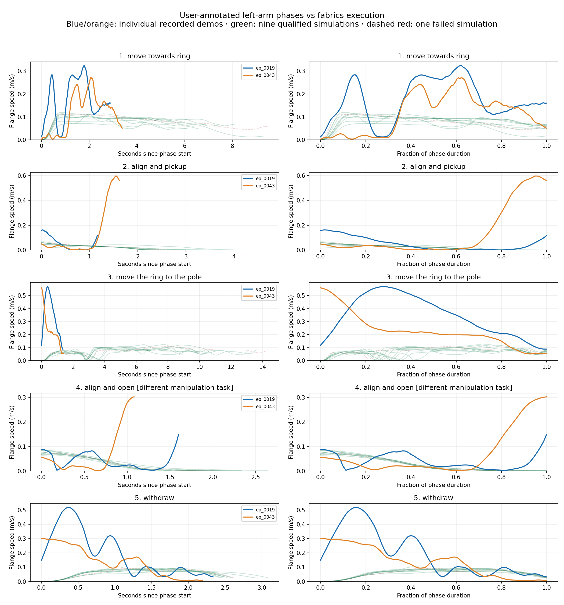

← All motion-comparison galleries
New: compare bend count, location, sharpness and extent in each annotated phase
ep_0019 and ep_0043 only; ep_0036 excluded. Five exact user-marked phases. Each path is one individual phase from one episode—no averaging across resets or trajectories. Nine qualified fabrics episodes supply the numerical medians; all ten attempts remain visible in plots, including the failed one.
Fabrics is not uniformly too straight: its transport includes a substantial lifting/carrying arc. The most consistent difference is slower travel/transport. Its final alignment and withdrawal are geometrically simpler. The two human examples also differ considerably, so these are tuning clues, not estimates of a general human distribution.
Mean speed is time-weighted within each phase, including pauses. Fabrics values below are medians of nine successful individual phases, not a mean trajectory. Different travel distances and task mechanics remain.
Blue = ep_0019; orange = ep_0043; green = selected fabrics example (red if its episode failed). Circle=start, ×=end. Normalized view aligns each start–end direction and divides by chord length; no averaging. Raw view uses start-centered metres. Small net displacement uses a principal-axis/path-length frame, reported in the details.
Left: actual seconds since phase start. Right: fraction of phase duration; speeds are not scaled. Thin green curves show other qualified simulations. Red dashed is the failed simulation, retained for transparency.

| Your phase | Fabrics approximation |
|---|---|
| Move towards ring | Approach until the recorded contact-alignment guard |
| Align and pickup | Remaining precision approach + gripper close |
| Move the ring to the pole | Lift + carry until placement-alignment guard |
| Align and open | Remaining placement approach + gripper release |
| Withdraw | Withdraw motion; final stationary hold excluded |
The guards are planned spatial boundaries reconstructed from saved path progress, not pauses or equal time splits. Rotation alignment may start earlier. Ring/pole manipulation and block placement are different tasks, so the mapping is approximate.
Fabrics currently has a fixed 1.30s gripper-close interval and 1.30s release interval, and its withdrawal is specified mainly as an upward displacement. These design choices help explain some timing and geometry differences; task-specific behavior should not be copied indiscriminately.
Human phase boundaries sometimes occur while the arm is already moving quickly; they are not velocity minima. Fabrics resets its path timing when entering lift/carry/withdraw, and shows a low-speed transition between lift and carry. Preserve the user phase boundaries rather than forcing stop-to-stop segmentation. Recommended first tuning target: broader but bounded travel speed variation, coupled to path geometry. Preserve slowing near contact. Review the alignment corrections separately; do not imitate every teleoperation spike or inject errors simply to increase variance.
Individual phase data and mapping · Metrics CSV · Plots PDF · Numerical summary · Your annotations